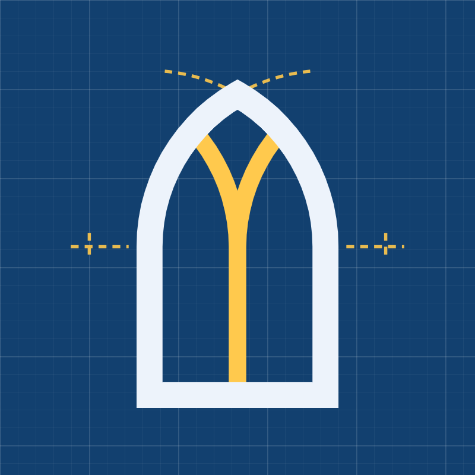
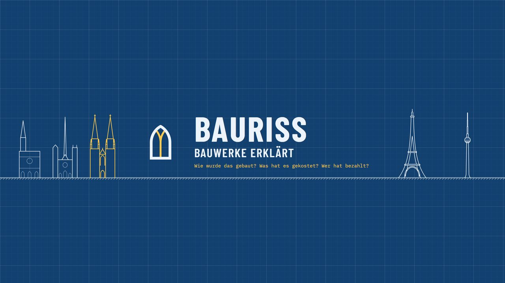
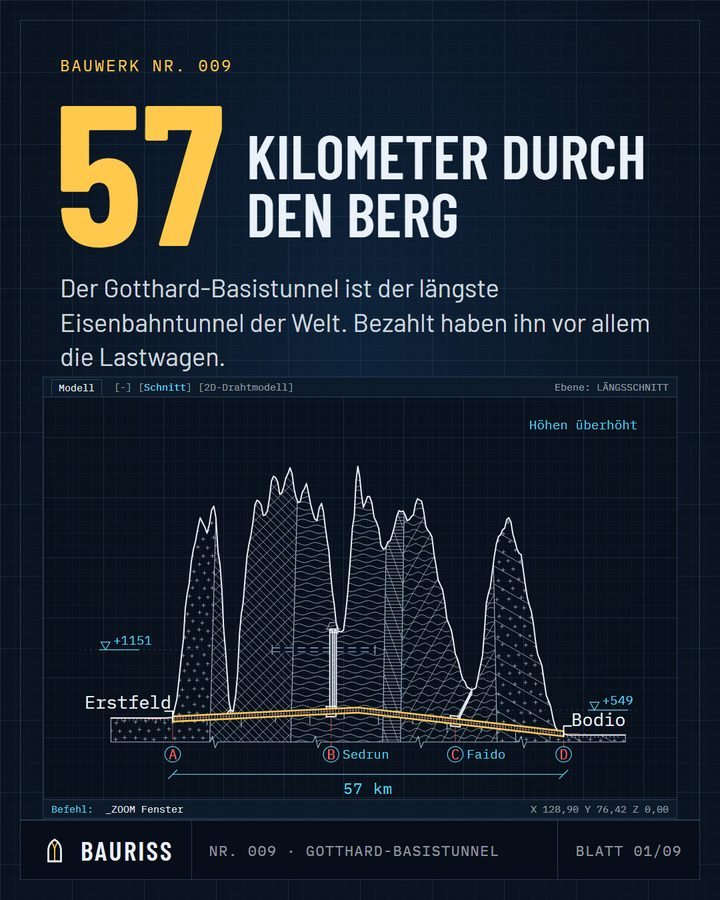
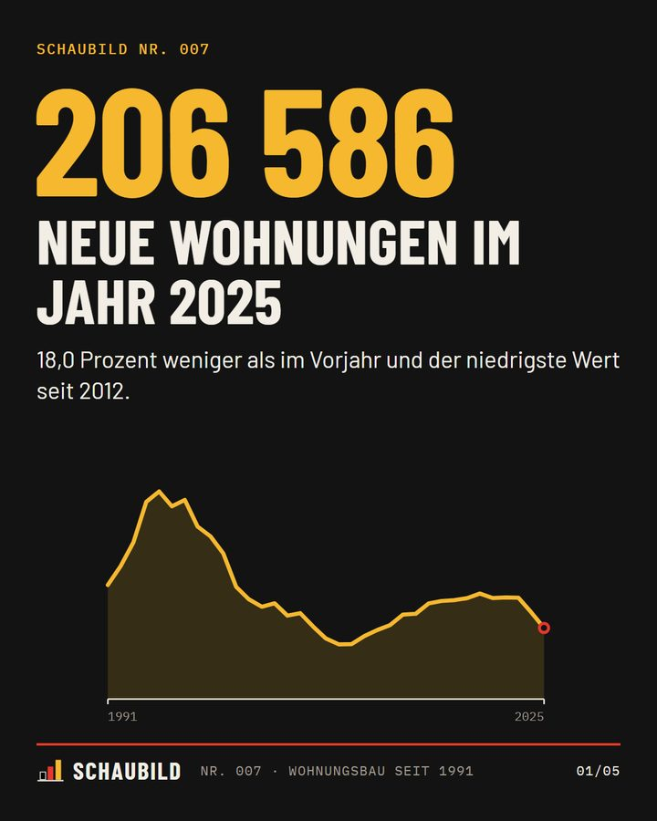

Bauriss
Bauwerke erklärt · Deutschland in Grafiken
Wie wurde das gebaut? Was hat es gekostet? Wer hat bezahlt?
Ebene: Video
[-] [Vorne] [YouTube]Bauwerke erklärt

YouTube: BaurissDome, Brücken, Tunnel – in langen Videos erklärt
→Ebene: Instagram
@der_bauriss

BaurissEin Bauwerk pro Tag
→@das.schaubild

SchaubildDeutschland in Grafiken
→Ebene: Werkstatt
GitHub: BaurissZeichnungen und Werkzeuge, alles als Code→
GitHub: SchaubildDaten, Quellen und Diagramme→